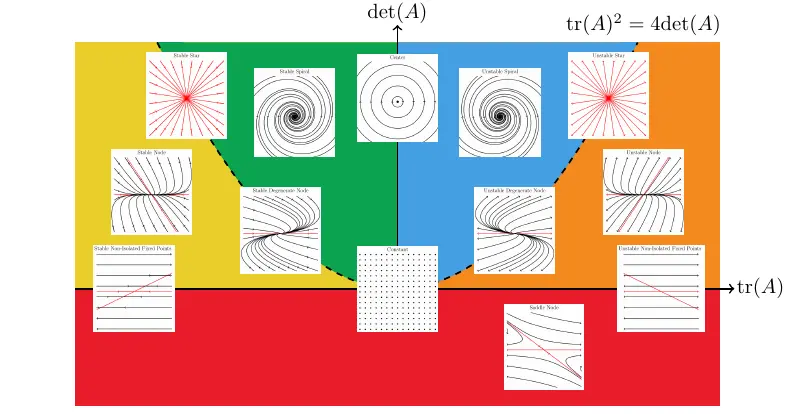
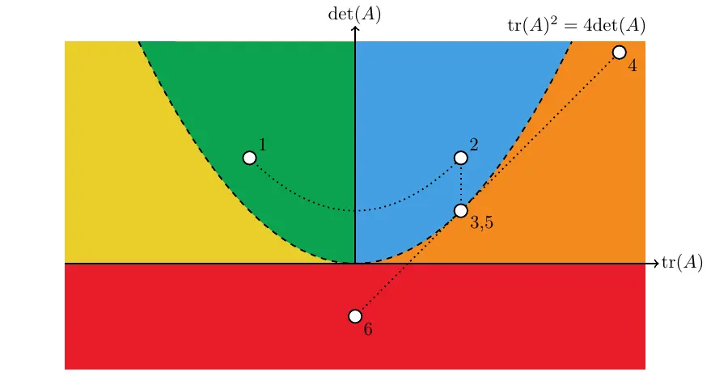

Table of Contents
Differential Equations

NARROW DISPLAY WARNING
You are most likely using a tablet or mobile device in portrait orientation. This website is best viewed using a typical computer screen with the browser window maximized.
Viewing this website in portrait orientation can cause problems with equations being longer than the screen width (you can scroll to the right), images being poorly sized, and the font size of maths text being much smaller than regular text. If your only option is a tablet or mobile device, your viewing experience will be better if you view this website in landscape orientation. You might need to refresh the page to fix any problems after rotating.
The solution of a two dimensional system of linear, constant coefficient, homogeneous differential equations can be classified using the trace and the determinant of the coefficient matrix. A plot of the trace and determinant has regions where certain solutions types occur, such as saddles and spirals. The diagram is called a Poincaré Diagram, mapping the four-dimensional space of all 2x2 matrices to a two-dimensional space.
There are only so many types of solutions that can occur in a two dimensional system of linear, constant coefficient, homogeneous differential equations. The solution type is determined by the eigenvalues, and whether or not there's a complete set of eigenvectors in the repeated eigenvalue case.
\begin{equation*} \begin{bmatrix} x' \\ y' \end{bmatrix} = \begin{bmatrix} a & b \\ c & d \end{bmatrix}\begin{bmatrix} x \\ y \end{bmatrix} \qquad A = \begin{bmatrix} a & b \\ c & d \end{bmatrix} \end{equation*}The trace and determinant of the constant coefficient matrix and their relationship to the eigenvalues,
\begin{equation*} \text{det}(A) = ad-bc=\lambda_{1}\lambda_{2} \qquad \text{tr}(A) = a+d=\lambda_{1}+\lambda_{2} \end{equation*}are a convenient tool to classify the solution type just from just the 2x2 matrix elements.
Click the image for higher resolution.
By changing the elements of the coefficient matrix,
\begin{equation*} \begin{bmatrix} x' \\ y' \end{bmatrix} = \begin{bmatrix} a & b \\ c & d \end{bmatrix}\begin{bmatrix} x \\ y \end{bmatrix} \end{equation*}the phase portraits will deform. As the trace and determinant cross through a boundary separating types of solutions, the phase portraits will transition from one solution type to another.
Clicking on the image or the YouTube link above will show an animation of passing through several boundaries and how the phase portrait transforms from one solution type to another while crossing through each boundary.
